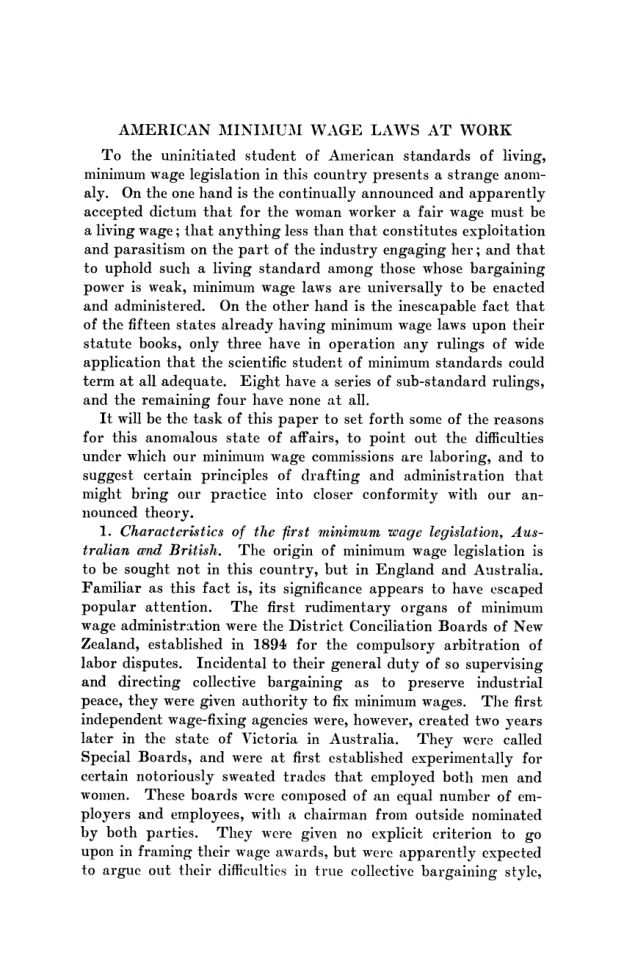

Dorothy Douglas e o salário mínimo que não chegava ao mínimo
Leitura: 9 min
Dorothy W. Douglas examina as quinze leis estaduais de salário mínimo para mulheres e explica por que a maior parte dos pisos fixados em 1919 ainda ficava abaixo do custo de vida.


Em agosto de 1918, o National War Labor Board foi chamado a Little Rock, no Arkansas, para resolver um conflito nas lavanderias. Encontrou as operárias ainda recebendo o piso fixado pela lei estadual em 1915: US$ 7,50 por semana de 54 horas. Elevou a escala em cerca de 40%, para US$ 11, e reduziu o período de aprendizagem de seis meses para trinta dias. O Arkansas tinha uma comissão com poder para rever o piso por localidade ou por ramo, mas ela nunca fora usada.
O episódio aparece em “American Minimum Wage Laws at Work”, de Dorothy W. Douglas, assinado em Seattle e publicado na American Economic Review de dezembro de 1919. São 38 páginas sobre o que as leis estaduais de salário mínimo para mulheres e menores tinham produzido até ali, apoiadas em relatórios oficiais, em decisões das comissões e em cartas que os secretários dessas comissões escreveram à autora.
Qual é a anomalia?
Douglas abre com o contraste entre doutrina e prática. Repetia-se que o salário justo da mulher trabalhadora deve cobrir o custo de vida, que pagar menos é parasitismo da indústria e que, onde o poder de barganha é fraco, a lei deve garantir esse padrão. Mas, dos quinze estados com leis no papel, só três tinham decisões de ampla aplicação que um estudioso consideraria adequadas; oito tinham pisos abaixo do padrão e quatro não tinham nenhum.
De onde veio o modelo?
Os primeiros órgãos a fixar salários mínimos foram os conselhos de conciliação da Nova Zelândia, criados em 1894 para a arbitragem obrigatória. Dois anos depois, o estado de Victoria, na Austrália, criou conselhos especiais para ofícios notoriamente explorados: número igual de patrões e empregados e um presidente de fora, sem critério legal de custo de vida. O sistema se espalhou pela Austrália e chegou à Inglaterra em 1909.
O nível dos pisos dependia do ambiente e da força de cada lado. Na Austrália, com mão de obra escassa e organizada, tendiam a igualar ou superar o necessário para viver; na Inglaterra, com mercado de trabalho abarrotado, ficavam abaixo. A lei inglesa só permitia criar conselhos em ofícios com salários excepcionalmente baixos e quando a situação do negócio o recomendasse, o que, para a autora, dava prioridade às considerações comerciais sobre as humanitárias.
Massachusetts ou Oregon?
Os Estados Unidos começaram em 1911, quando Massachusetts criou uma comissão de estudo. A Constituição impunha dois limites: a lei só podia valer para mulheres e menores, porque estendê-la aos homens esbarraria na liberdade de contrato protegida pela 14ª Emenda; e precisava definir critérios, para não delegar função legislativa a um órgão administrativo. A lei de Massachusetts mandou os conselhos considerarem as necessidades das empregadas e também a situação financeira do setor. Na passagem pelo legislativo, perdeu a execução: as ordens viraram recomendações, e a pena, a publicação do nome do infrator em jornais.
Mesmo assim, houve resultado. No ramo de escovas, o primeiro investigado, o orçamento acordado chegou a US$ 8,71 por semana, o piso foi de 15,5 centavos por hora, e os ganhos médios anteriores ficavam abaixo de US$ 6. Em regra, observa Douglas, o piso de Massachusetts fica cerca de um dólar abaixo do orçamento que o próprio conselho aprovou.
O Oregon, em 1913, foi em outra direção. A lei, aprovada por iniciativa popular, declara ilegal empregar mulheres por salário insuficiente para cobrir o custo de vida e manter a saúde, sem menção à situação do setor; as decisões são obrigatórias em 60 dias, com multa e prisão; os conselhos são menores, com mais representantes do público e um membro da comissão central. Das treze leis seguintes, nove copiaram o Oregon, uma Massachusetts, e três fixaram o piso na própria lei, como o Arizona, com US$ 10 para todas as mulheres, e Utah, com US$ 7,50 por 54 horas desde 1913.
Por que os pisos ficam baixos?
Douglas atribui o resultado mais à prática do que ao texto. Os representantes dos patrões levam em conta a situação do setor, e boa parte dos representantes do público os acompanha, sobretudo diante do argumento da concorrência com outros estados. Os orçamentos acordados omitem ou reduzem despesas médicas, tempo perdido por doença ou falta de serviço, férias, seguro e transporte, muitas vezes reunidos sob um item de diversos menor que qualquer um deles. Em Washington, os patrões propuseram US$ 12, as empregadas US$ 15, e o piso saiu em US$ 13,20.
“A linguagem inequívoca de nossas leis deve ser vista antes como um marco para o progresso futuro do que como um índice do que já se alcançou.” (“The unequivocal language of our statutes ... is to be regarded rather as a guidepost for further progress than as an index of present achievement”)
O tempo agrava o problema. Em 1917, o custo de vida subiu cerca de 25%, e um salário de US$ 10 passou a valer US$ 8 no fim do ano. Revisar exige nova rodada de levantamentos e audiências, e as comissões têm pouco dinheiro: a do Oregon dispunha de US$ 3.500 por ano para tudo, de salários a fiscalização. Minnesota reeditou seus pisos de US$ 8 a US$ 9, fixados em 1913–14, por falta de tempo para um novo levantamento estadual.
E quem não tem semana completa?
Quase todas as comissões fixam taxas por hora calculadas para a semana legal completa; quem trabalha menos, por culpa de quem for, recebe menos que o mínimo considerado necessário. A autora destaca as exceções. A Califórnia, em novembro de 1918, fixou US$ 10 por 48 horas e 25 centavos por hora quando o empregador não oferece a semana inteira. Massachusetts, para faxineiras de escritório, que trabalhavam em média 36 horas, fixou 30 centavos à noite e 26 de dia. Wisconsin negou período de aprendizagem às indústrias sazonais.
Na aprendizagem, os abusos eram conhecidos. No Oregon, em 1916, empregadores demitiam moças ao fim do primeiro ano ou as transferiam de seção para recomeçar o período de aprendiz. A resposta foi uma escala crescente, de US$ 6 com aumento de US$ 1 a cada quatro meses, hoje adotada por quase todos os estados com comissão. Nas lavanderias, o período foi de um ano em Massachusetts, seis meses no Arkansas e trinta dias na decisão do War Labor Board.
O que Douglas propõe?
As recomendações seguem três eixos. O primeiro é um padrão de vida real: um orçamento-padrão para a mulher que se sustenta sozinha, elaborado e revisto periodicamente pelo Bureau of Labor Statistics, ajustado às condições locais e convertido em renda anual por meio de diferenciais que encareçam a hora quando falta trabalho. O segundo é flexibilidade: poder às comissões para rever pisos por um ano com base em índices de custo de vida, para agir antes que os salários caiam e para escalonar aumentos grandes, como previa a nova lei inglesa de 1918.
O terceiro é centralização: a comissão deve poder corrigir os conselhos, e seu secretário executivo deve votar nos dois órgãos. Douglas registra ainda o que considera a mudança mais promissora: no segundo semestre de 1919, Wisconsin, Califórnia e Oregon seguiram Washington e fixaram pisos uniformes para todos os setores, e os três estados do Pacífico chegaram a valores quase idênticos, US$ 13,20 e US$ 13,50 por 48 horas. Propõe conferências regionais entre estados vizinhos e lembra que nada funciona sem verbas adequadas dos legislativos.
“A cadeia da atividade de salário mínimo não pode ser mais forte que seu elo mais fraco.” (“The chain of minimum wage activity can be no stronger than its weakest link”)
Na minha leitura
Na minha leitura, o mérito do artigo está em separar três camadas que o debate costuma misturar: o critério legal, o órgão que aplica o critério e a informação de que esse órgão dispõe. Douglas mostra que o critério importa menos do que se supunha. Leis com a mesma redação produziram pisos muito diferentes, e o que explica a diferença é a composição dos conselhos, a presença de alguém da comissão central e a qualidade dos orçamentos.
O segundo ponto é o da indexação. Um piso fixado em valor nominal, num período de preços em alta, perde poder de compra mais depressa do que o processo administrativo consegue repô-lo. A proposta de um orçamento federal revisto periodicamente, com ajuste local, é uma forma de separar a parte técnica, medir o custo de vida, da parte de barganha. É a mesma separação que sustenta, até hoje, as regras de reajuste de salários mínimos.
Glossário
- Salário de subsistência (living wage)
- salário suficiente para cobrir o custo de vida e manter a saúde de quem trabalha.
- Conselho de salários (wage board)
- órgão com representantes de patrões, de empregados e do público que recomenda o piso de um ramo.
- Lei de taxa fixa (flat-rate law)
- lei que fixa o piso no próprio texto, sem comissão para revê-lo.
- Liberdade de contrato
- doutrina judicial que limitava a regulação de salários e jornadas com base na 14ª Emenda.
- Período de aprendizagem
- tempo em que a trabalhadora inexperiente pode receber abaixo do piso, em escala crescente.
- Diferencial de irregularidade
- acréscimo na taxa por hora quando o empregador não oferece a semana completa de trabalho.
Fontes
- American Minimum Wage Laws at Work — Dorothy W. Douglas (Seattle, Washington) (pp. 701–738). JSTOR · Internet Archive (PDF)
- Edição completa, com os demais artigos: Nº 161 do Arquivo.
Documento em domínio público (EUA, publicado antes de 1931), via JSTOR Early Journal Content e Internet Archive. Resumo e comentário do autor deste site, sem afiliação com a American Economic Association. Encontrou um erro? Escreva: a correção é publicada no próprio texto, com data.
↑ Nº 161 · Seguro estatal, salário mínimo e a conta da guerra Seligman e a conta da Primeira Guerra →